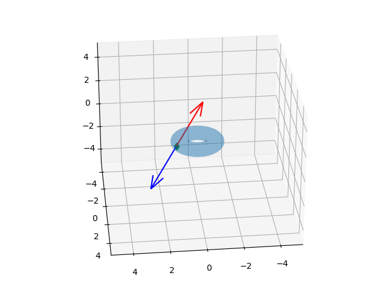

Dönüş Animasyonu
Bir örnek gövde üzerinde simülasyon yapmaya uğraşalım. Elimizde bir simit, ya da geometride torus denen bir şekil var. Bu dosya STL denen bir format içinde, detaylar için [1]. Kuvvet uygulama sonrası lineer ve açısal momentum içeren simülasyon için pek çok değişkeni diferansiyel tanımları üzerinden entegre etmemiz gerekiyor, daha basit bir örnek ile, özellikle sabit bir açışal hız üzerinden salt döndürme ile başlamak uygun olabilir. [4]'te tarif edilen döndürme matrisi türevini hatırlarsak,
$$ \frac{\mathrm{d} R}{\mathrm{d} t} = \tilde \omega \cdot R $$
Döndürmeyi bir $\omega$ etrafında düşünüyorduk, $\omega$'nin büyüklüğü açısal dönme hızına tekabül ediyordu, ve $\tilde \omega$ eksi-bakışımlı matris idi.
Tüm bunları entegre edici odeint çağrısının kabul edeceği bir formda
nasıl kullanırız? Bu çağrı düzleştirilmiş bir liste içinde diferansiyel
sonuçların, ve ana değişkenlerin olmasını bekliyor. O zaman $R$'yi kolon bazlı
olmak üzere düzleştiririz, ve gerektiği o listeden matris formuna geçeriz, vs.
from scipy.integrate import odeint
from stl import mesh
def skew(a):
return np.array([[0,-a[2],a[1]],[a[2],0,-a[0]],[-a[1],a[0],0]])
your_mesh = mesh.Mesh.from_file('torus.stl')
prop = your_mesh.get_mass_properties()
R0 = np.eye(3,3)
omega = np.array([1.0,1.0,1.0])
#omega = np.array([0.0,1.0,0.0])
skew_omega = skew(omega)
def dRdt(u,t):
R1x,R1y,R1z,R2x,R2y,R2z,R3x,R3y,R3z = u
R = np.array([R1x,R1y,R1z,R2x,R2y,R2z,R3x,R3y,R3z])
R = R.reshape((3,3)).T
res = np.dot(skew_omega, R)
return list(res.T.flatten())
LIM = 5
STEPS = 20
t=np.linspace(0.0, 3.0, STEPS)
R0 = np.eye(3,3)
u0 = R0.flatten()
u1=odeint(dRdt,list(u0),t)
Üstte görülen mesela R1x $R$ matrisinin 1'inci kolonunun $x$ değişkeni
anlamında.
Simülasyonda simit şeklinin baktığı yön $R$ içinde, ve grafik amaçlı olarak her
seferinde simit şeklini sıfırdan yükleyip son $R$'ye ilerletiyoruz, ve her
adımda bu grafiği basıyoruz. Simülasyonu hesapladık, tüm sonuç u1
içinde, görüntüden bazı seçilmiş kareler altta görülebilir,
import matplotlib.pyplot as plt
from mpl_toolkits import mplot3d
def plot_vector(fig, orig, v, color='blue'):
ax = fig.gca(projection='3d')
orig = np.array(orig); v=np.array(v)
ax.quiver(orig[0], orig[1], orig[2], v[0], v[1], v[2],color=color)
ax = fig.gca(projection='3d')
return fig
for i in range(STEPS):
fig = plt.figure()
axes = mplot3d.Axes3D(fig)
your_mesh = mesh.Mesh.from_file('torus.stl')
R = u1[i].reshape((3,3)).T
your_mesh.rotate_using_matrix(R)
scale = your_mesh.points.flatten()
axes.add_collection3d(mplot3d.art3d.Poly3DCollection(your_mesh.vectors,alpha=0.3))
plot_vector(fig, [0,0,0], omega, color='red')
axes.auto_scale_xyz(scale, scale, scale)
axes.set_xlim(-LIM,LIM);axes.set_ylim(-LIM,LIM);axes.set_zlim(-LIM,LIM)
axes.view_init(azim=20,elev=0)
plt.savefig('/tmp/rotate_%02d.png' % i)


! convert -delay 20 -loop 0 /tmp/rotate*.png /tmp/rotate1.gif
Animasyon sonucu [4]'te bulunabilir.
İttirme Animasyonu
Bu animasyon için katı gövdeye bir noktada bir kuvvet uyguluyacağız. O noktayı seçmek için STL formatında olan üçgenlerden birini kullanabiliriz, çünkü bu üçgenlerin gövdenin yüzeyinde bir yerlerde olduğunu biliyoruz, Torus STL şekli bu üçgenlerin herbirine dik olan normal vektörü STL formatında zaten, o üçgenlerden birinin normal vektörünü ters çevirirsek, o noktaya o yönde bir kuvvet uyguladığımızı hayal edebililriz, ve simülasyonun geri kalanını bu noktadan devam ettiririz.
from stl import mesh
your_mesh = mesh.Mesh.from_file('torus.stl')
prop = your_mesh.get_mass_properties()
print ('hacim',np.round(prop[0],3))
print ('yercekim merkezi (COG)',np.round(prop[1],3))
print ('COG noktasinda atalet matrisi')
print (np.round(prop[2],3))
hacim 4.918
yercekim merkezi (COG) [-0. 0. -0.]
COG noktasinda atalet matrisi
[[ 3.223 -0. 0. ]
[-0. 3.223 0. ]
[ 0. 0. 5.832]]
COG'nin sıfır noktasında olması mantıklı çünkü STL dosyasında simit şekli oraya konmuş, ve simit şekli simetrik bir şekil.
import matplotlib.pyplot as plt
from mpl_toolkits import mplot3d
fig = plt.figure()
axes = mplot3d.Axes3D(fig)
scale = your_mesh.points.flatten()
axes.add_collection3d(mplot3d.art3d.Poly3DCollection(your_mesh.vectors,alpha=0.3))
axes.auto_scale_xyz(scale, scale, scale)
def plot_vector(fig, orig, v, color='blue'):
ax = fig.gca(projection='3d')
orig = np.array(orig); v=np.array(v)
ax.quiver(orig[0], orig[1], orig[2], v[0], v[1], v[2],color=color)
ax = fig.gca(projection='3d')
return fig
LIM = 5
axes.set_xlim(-LIM,LIM);axes.set_ylim(-LIM,LIM);axes.set_zlim(-LIM,LIM)
SCALE = 4
tidx = 2000
o = np.mean(your_mesh.vectors[tidx],axis=0)
axes.plot (o[0],o[1],o[2],'gd')
n = your_mesh.get_unit_normals()[tidx]
plot_vector(fig, o, n*SCALE)
plot_vector(fig, o, -n*SCALE, color='red')
axes.view_init(azim=84,elev=28)
plt.savefig('phy_005_basics_04_05.png')


import numpy as np
from stl import mesh
import numpy.linalg as lin
your_mesh = mesh.Mesh.from_file('torus.stl')
prop = your_mesh.get_mass_properties()
Ibody = np.round(prop[2],3)
Ibodyinv = lin.inv(Ibody)
dt = 0.1
x = np.zeros((3,1))
R = np.eye(3,3)
L = np.zeros((3,1))
v = np.zeros((3,1))
F = np.zeros((3,1))
M = 1
P = M*v
def skew(a):
return np.array([[0,-a[2],a[1]],[a[2],0,-a[0]],[-a[1],a[0],0]])
tidx = 2000
apply_at = np.mean(your_mesh.vectors[tidx],axis=0)
f_at = your_mesh.get_unit_normals()[tidx]
tau0 = np.cross(apply_at, f_at).reshape(3,1) * 10.0
res = []
for i in range(30):
xold,Rold,Pold,Lold = x.copy(),R.copy(),P.copy(),L.copy()
Iinv = np.dot(np.dot(Rold, Ibodyinv), Rold.T)
omega = np.dot(Iinv, Lold)
skew_omega = skew(omega.reshape(3))
R = Rold + np.dot(skew_omega, Rold) * dt
v = Pold / M
x = x + v*dt
#F = ...
P = Pold
if i==0:
L = Lold + tau0*dt
print ('first L',L)
else:
L = Lold
res.append([x,R,P,L])
print (R)
#exit()
import matplotlib.pyplot as plt
from mpl_toolkits import mplot3d
LIM = 5
def plot_vector(fig, orig, v, color='blue'):
ax = fig.gca(projection='3d')
orig = np.array(orig); v=np.array(v)
ax.quiver(orig[0], orig[1], orig[2], v[0], v[1], v[2],color=color)
ax = fig.gca(projection='3d')
return fig
SCALE = 4
for i, [x,R,P,L] in enumerate(res):
print (R)
fig = plt.figure()
axes = mplot3d.Axes3D(fig)
your_mesh = mesh.Mesh.from_file('torus.stl')
# force application
o = np.mean(your_mesh.vectors[tidx],axis=0)
n = your_mesh.get_unit_normals()[tidx]
plot_vector(fig, o, -n*SCALE, color='red')
your_mesh.rotate_using_matrix(R)
scale = your_mesh.points.flatten()
axes.add_collection3d(mplot3d.art3d.Poly3DCollection(your_mesh.vectors,alpha=0.3))
plot_vector(fig, [0,0,0], omega, color='red')
axes.auto_scale_xyz(scale, scale, scale)
axes.set_xlim(-LIM,LIM);axes.set_ylim(-LIM,LIM);axes.set_zlim(-LIM,LIM)
axes.view_init(azim=84,elev=28)
plt.savefig('/tmp/rotate_%02d.png' % i)
plt.close('all')
[devam edecek]
Kaynaklar
[1] Bayramlı, 3D Baskıya Hazır CAD Tasarımlarına Erişmek, Numpy-STL, https://burakbayramli.github.io/dersblog/sk/2020/08/numpy-stl.html
[2] Witkin, Physically Based Modeling
[3] Bayramli, Animasyon 1, https://drive.google.com/uc?export=view&id=17qlJvaucB6_l0eLUfcevu84qNXQocGHO
[4] Bayramli, Fizik, Temel Fizik 4, Katı Gövde